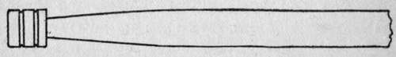

Triggers And Stocks-Care Of Rifle. Part 3
Description
This section is from the "" book, by .
Triggers And Stocks-Care Of Rifle. Part 3
Get a yard or two of firm cotton flannel, thick enough so that the tip of the rod will not push through it (a stuck rod is hard to remove). From this cloth cut square wipers of such size that they will just fit snugly but can be pushed through without strain. If your rifle is of such model that it can be cleaned from the breech (every rifle should be) open the breech, remove bolt, if there is one, put a newspaper on the floor, stand the rifle on it with muzzle down, and keep it so. Shove a dry wiper through, as far as it will go, and withdraw it. This brings out the carbon fouling.
Then saturate a wiper with nitro-solvent oil and swab the bore with it four or five times. Repeat with a fresh rag wet with the solution. Finally, turn the rifle up and clean out the muzzle with a similarly oiled rag on the end of a sharpened pine stick, and the chamber with the same. In this way there is no chance of injuring the muzzle, which is the most delicate part of a gun.
It is not necessary to scrub hard, because your object is not to remove the sticky fouling by friction (it can't be done, not even with a wire brush), but to "dope" the barrel thoroughly with the solvent, and then give the latter time to get in its work.
Set the gun away for twenty-four hours. Then look through it. You may be surprised to see the bore evenly coated with a reddish deposit that looks like rust. It is not rust, but is something that soon will cause rust if you don't remove it. This deposit will appear, no matter how much elbow-grease you may have used on the barrel in the first place. When a gun is fired with smokeless powder, the gases are driven into the very pores or texture of the steel, and some of their acid residue is lodged there. This substance will " sweat out " gradually.
Now go for it, with the nitro-solvent, just as you did before. And repeat this operation the third day, even the fourth, if you love your gun. When a dry rag will come out perfectly clean, you may be satisfied that the gun is " surgically clean99—the microbes of rust have been exterminated.
Then oil the bore with liquid vaseline (albolene, cosmoline oil). This is absolutely neutral, cannot gum or turn rancid, and is thick enough to stay where it is put. A thin oil is not the thing for a gun bore, because it will run down into the chamber and leave the upper bore unprotected. If the rifle is to be put away for a long time, or if you live at the seashore, use mercuric ointment instead of oil; it is the best of all rust preventers.
You can make a good nitro-solvent cheaper than you can buy it from a sporting goods dealer. This is Dr. W. G. Hudson's formula, and a good one:
Kerosene oil free from acid.......2 fluid ounces.
Sperm oil........................1 fluid ounce.
Spirits of turpentine..............1 fluid ounce.
Acetone .........................1 fluid ounce.
Your druggist can test the kerosene for you, in a jiffy, with litmus paper. The above solvent is a good rust-preventive.
If nitro-solvent cannot be procured, dissolve washing soda (not baking soda) until the water will take up no more (i. e., a saturated solution). Use this just as you would the solvent, but when through, carefully remove all trace of it from the bore with dry rags, or the soda itself will set up rust. Then oil.
A cleaning rod to be used in a high power rifle is best made of steel, because grit will stick to a wooden rod, or even a brass one, and act on the bore like a rat-tail file. Any rod, whether wood or metal, will injure the muzzle in a surprisingly short time, if the wiping is done from the muzzle and in an unskilful way. The proper shape for a rod head is shown in the accompanying cut, which I have borrowed from Lieutenant Whelen's Hints to Military Riflemen.
Right Shape for Cleaning Rod.
While a rifle cannot be cleaned thoroughly with a pull-through or field wiper, still, such treatment is better far than neglect. A common cord or thong is likely to break, and then the shooter is " hung up " for sure. A superior field cleaner, home made, was recently described by Mr. R. A. Kane:
" Get about three feet of heavily braided brass picture hanger's wire, drop a little soft solder on each end to keep it from raveling, then with a pointed tool like a carpenter's awl, separate the strands squarely in the middle, an inch from one end, and again twice more at intervals, leaving an inch between the .openings. Into these openings through the braided wire insert oblong strips of cotton flannel thick enough to fit the bore snugly.
" To wipe the barrel, thread the plain end of the wire through from the muzzle and, as it appears at the open breech, take a turn around the hand and draw through smartly with a single pull. This excellent pull-through wiper is not liable to break off in the barrel and, when coiled up, may be carried in one's vest pocket. The wiping rags should be passed through the braided wire at right angles to each other".
Always wipe out the oil from a rifle bore before firing, for it will make the bullet fly wild. For the same reason, never wet or oil a bullet.
The mechanism of a rifle, wherever metal parts rub together, should be kept lightly oiled with a good thin oil like "3-in-l." Too much oil only serves to catch dust and grit. For the outside of the gun, Lieutenant Whelen advises that a piece of buckskin be saturated with oil; " once thoroughly saturated, it will last a lifetime, and is a great saver of oil." Of course, the gun first must be wiped thoroughly dry. The stock needs attention, at intervals, lest moisture get into it and swell it. Apply a coat of raw linseed oil, nothing else, and polish by rubbing with the hand.
To remove metal fouling, dope the barrel for three or four minutes with a preparation sold for the purpose, or with strongest ammonia, cleaning thoroughly thereafter till all trace of the alkali has vanished, and being especially careful to get none of the liquid in the action, for it is sure to cause rust.
If a rifle barrel once becomes pitted from rust, throw it away and get another. To try to remove rust with flour of emery or pumice would ruin the barrel anyway. Never polish any part that is blued. Do not put your rifle away with a cork or oiled rag in the muzzle: instead of keeping moisture out of the barrel it will seal up the moisture of the air inside the tube, and rust will follow.
It sometimes happens that the neck of a shell is blown up into the barrel, or a bullet j acket may lodge there. To remove either, insert a bullet jacket extractor, such as is issued to troops in the company repair kit, and tap out with a cleaning rod; or, upset one end of a bit of copper rod to full caliber of bore, insert small end down, and tap out gently.
Continue to:
- prev: Triggers And Stocks-Care Of Rifle. Part 2
- Table of Contents
- next: Chapter VII. Shot Patterns And Penetration